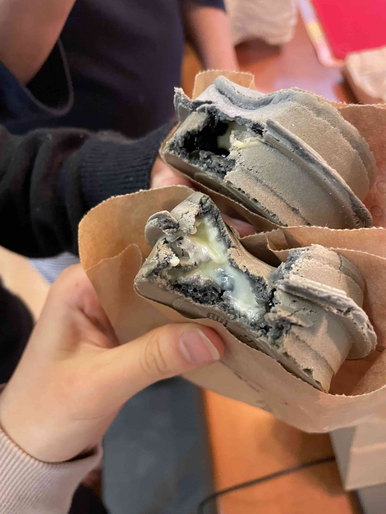
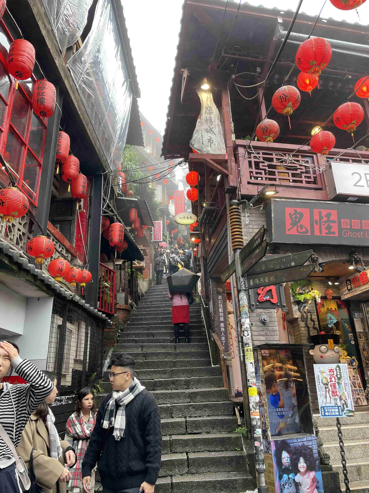
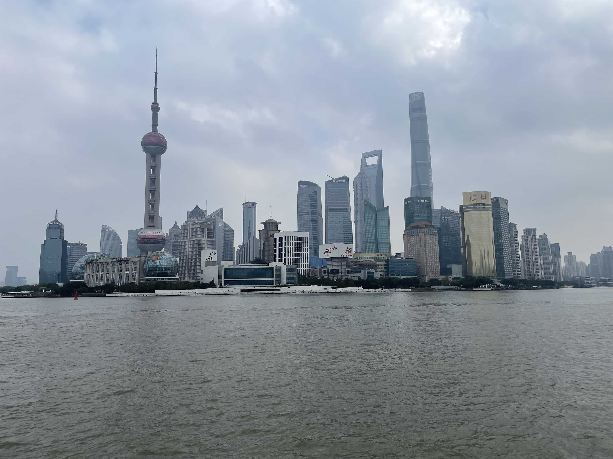
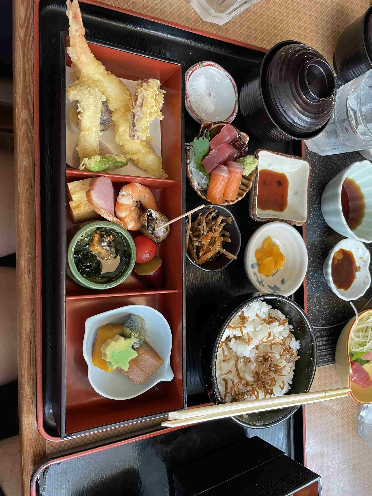
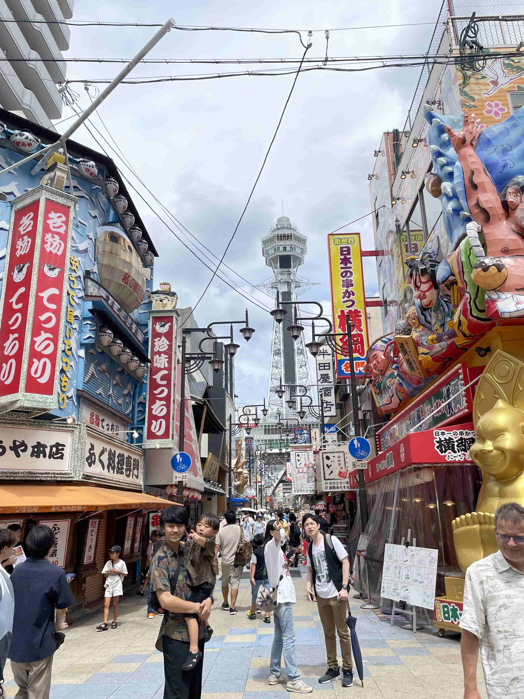
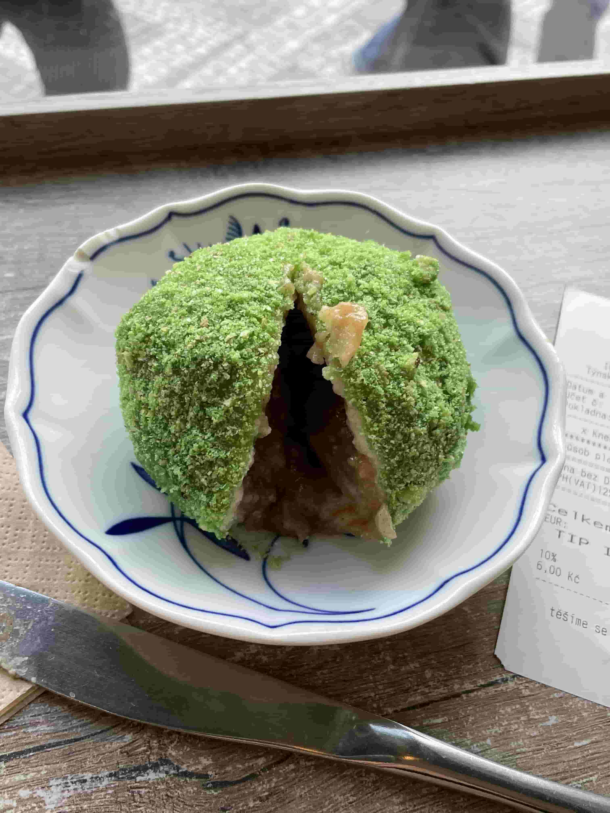
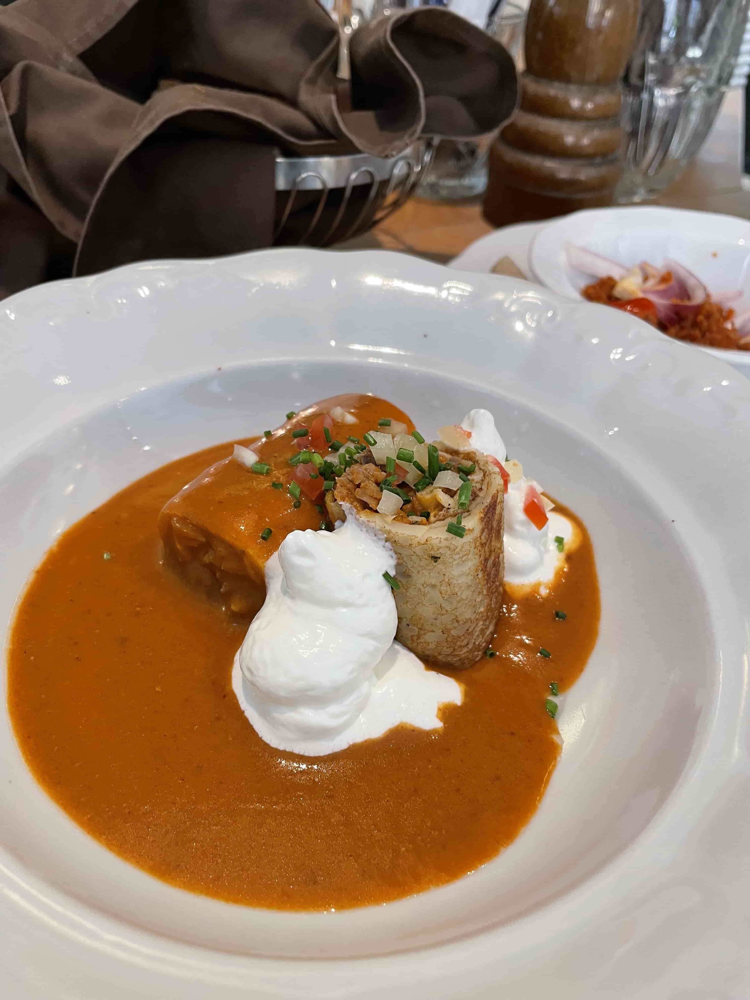
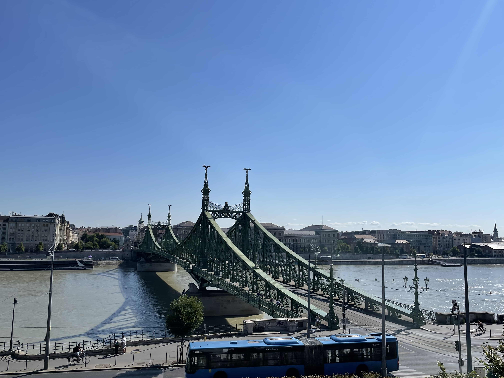

I'm thankful for my parents to have taken us around so many places and giving me insight into different cultural experiences. I believe it has made me the open-minded and curious person I am today. So, here's a list of my favorite places I've been to and what stayed with me from that trip:
Taiwan
Although I was born Taiwan, I have never lived there. After moving, we used to travel to Taiwan every two years to visit my mom's parents but this stopped with my graduation from high school. Now we all kinda do our own thing. But, after finishing school, I took a gap year and spent four months in Taiwan with my mom. The food is probably the thing I love the most there. And since they have so much delicious food there, here a small list of my faves:- Sweet Potato Balls This is a classic street food on Night Markets. They make small dough balls out of sweet potato and glutinous rice flour and deep fry them until golden brown and crispy. Each bite you take is just heaven. The thought of it makes me want to go back just to taste that again. Really a hard recommend if you ever get the chance to go to Taiwan.
- Shaved Ice
- Pork Floss Bread Taiwanese people have a way of combining sweet and salty things. Pork floss is dried meat that was marinated in slightly sweet sauce. This with mayonnaise on a fluffy soft bread is just a unique experience for the taste buds.
- Wheel Cake
 You might know this as Bingsu from Korea. But in Taiwan, the most traditional way
is to have a huge mountain of shaved ice, lots of syrup and all kinds of toppings. The thing I love most
about the toppings is the variety of flavors and mouth-feel. You get everything at once. Red Beans, Grass Jelly,
Glutinous Rice Balls, Nuts, Dried/Fresh Fruits. I understand that it might be a bit weird for some people
but I think it's always worth a try!
You might know this as Bingsu from Korea. But in Taiwan, the most traditional way
is to have a huge mountain of shaved ice, lots of syrup and all kinds of toppings. The thing I love most
about the toppings is the variety of flavors and mouth-feel. You get everything at once. Red Beans, Grass Jelly,
Glutinous Rice Balls, Nuts, Dried/Fresh Fruits. I understand that it might be a bit weird for some people
but I think it's always worth a try!

Another classic. It's a filled pancake (sweet or savory) that uses special molds for the cylinder shape. My favorite basic filling is milk custard. But some places also offer unique fillings. I really loved the tea pudding, mochi, tapioca pearl and black sesame.
Although food played a huge part of my stay, there are tons of breathtaking spots (Jiufen, Fo Guang Shan).
They have small islands you can reach by boat (Cijin, Xiaoliuqiu) and go scuba diving or
just chill at the beach and swim in the ocean (Kenting is very famous for their beaches).
If you're not in the mood for water, they also have plenty of beautiful hiking routes.


China (2024)
This trip was quite spontaneous. After booking my flight to Taiwan, my brother offered me to visit him in Shanghai since he worked there. And so, I decided to go there. Honestly, I don't think I have ever managed to do this much in just two weeks.We explored Shanghai, Beijing, Chengdu and Leshan. The differences really surprised me.

Shanghai was really modern. With its skyscrapers, everything just seemed so ginormous and flooded with people (and tourists).In contrast, Beijing honestly just stayed in my memory as a grey city. However, there are a lot more historical sites like Tiananmen Square, the Forbidden City and obviously, the Great Wall.
 We decided to go there in
the early morning (7 am) which was probably the best decision for that trip. Normally, it's completely
packed as any other place in China but who wants to hike up the stairs of the Great Wall in
the early morning in mid November? An absolute core experience of that trip that still feels unreal in my memory.
We decided to go there in
the early morning (7 am) which was probably the best decision for that trip. Normally, it's completely
packed as any other place in China but who wants to hike up the stairs of the Great Wall in
the early morning in mid November? An absolute core experience of that trip that still feels unreal in my memory.
In Chengdu, we tried the spiciest food in our lives. We told the waiter that we wanted the lowest spice level for our soup. What arrived was a huge pot, completely red, covered with chili peppers. And what can I say. It tasted as spicy as it looked. After just a few bites I could not feel anything in my mouth anymore. But nevertheless, it was super delicious. I'm excited to come back to China for another trip. It seems to have endless places to explore.
Japan (2024)
Japan really impressed me. The food, the friendliness, the nature. Overall a near-perfect experience. First, I want to start talking about food. Yes. Again. In general, I'm a huge fan of Japanese food, so I really have nothing to complain about. The Sushi was absolutely amazing, their Ramen perfectly rich and their delicious seafood (I really miss their Eel Rice). I also fell in love with Bentos.
It's amazing - You get everything in one meal. Rice, soup, meat, veggies, small sides, all in a neat box where everything has its own place.Apart from insanely good food, you can find lots of cultural and nature spots as well. Temples in the forest, hiking routes with beautiful views, or if you enjoy big cities you can definitely spend a full day exploring malls and shopping streets.



Czech Republic, Prague (2025)
This was my first stop for my solo travel. I mostly stayed in Prague because I didn't have any means of transportation (and money for it), but it was a nice stay for the few nights I spent there.
I loved their Knedlins (some balls filled with all kinds of sauces) and those Chimney cakes covered in cinnamon.Prague is honestly just a great place if you love sight seeing, shopping and big cities. I think going here with friends would be a fun experience. But I had fun visiting some friends here and going roller skating and climbing with them.
Slovakia, Bratislava (2025)
My second destination of my solo travel. It's a small city, so I only stayed a night. But it was plenty of time to visit all the famous spots and the big castle.Although there's not much to do, I think it's worth checking out once.
Hungary, Budapest (2025)
My last stop of my solo travel. Probably my favorite place in Europe. Before coming here, I didn't really know much about their cuisine but I ended up falling in love with it.They had these Cottage Cheese balls covered in a sweet sauce (I'm obsessed with cottage cheese). I did not know that I needed this but I was absolutely happy that I got to discover this dish.

Another absolute banger was a special savory pancake that's filled with minced meat and covered in a creamy paprika sauce.
They had some other delicacies such as Langos, Goulash, Strudels and lots of Paprika stuff. Budapest is definitely a city I would come back to just for the food alone.
But hey, it wasn't just their food. This was the first big city I truly enjoyed walking through.
Absolutely breathtaking architecture, beautiful sceneries and views from the top of the castle hill and a peaceful walk by the river. Even though I also think coming here with friends would be lots of fun, I still enjoyed myself a ton alone in this city.
